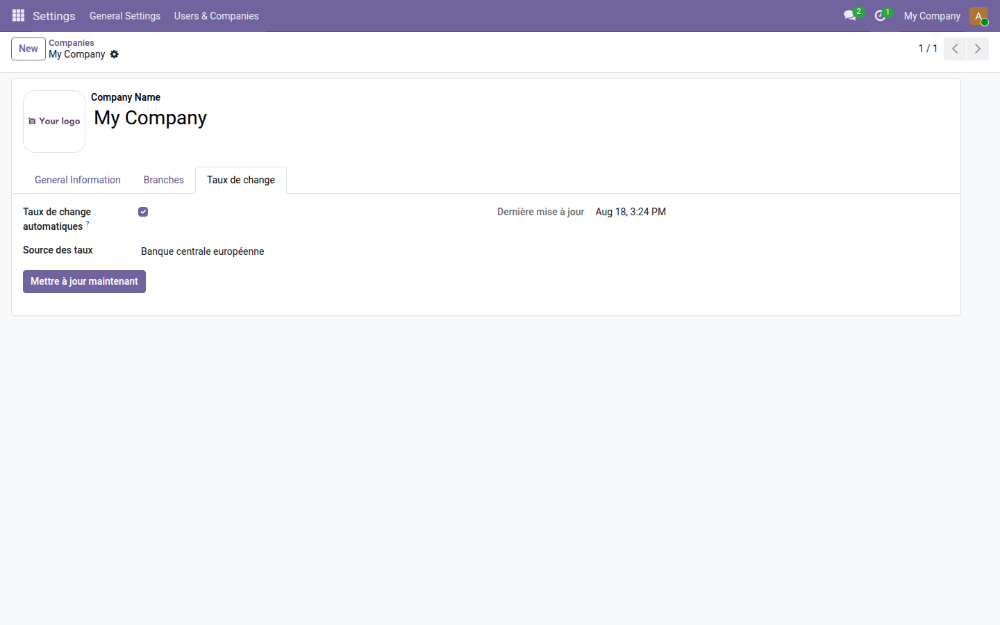
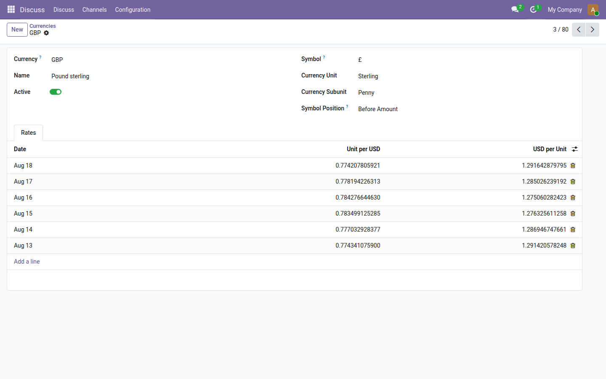

Les taux se mettent à jour tout seuls, depuis la Banque centrale européenne.
Odoo Community sait tenir un tableau de taux de change ; il ne sait pas le remplir. Chaque matin, quelqu'un recopie donc des taux à la main — ou personne ne le fait, et les conversions dérivent en silence sur les factures, les achats et les rapports.
L'onglet ajouté sur la société tient en quatre lignes : l'interrupteur, la source, la date du dernier succès, et un bouton pour une mise à jour immédiate. En cas de panne, l'erreur s'affiche ici — un message dans le journal du serveur ne se lit pas depuis l'interface.

Un taux par jour et par devise, inscrit là où Odoo l'attend : les conversions de factures et de rapports s'appuient dessus sans autre réglage.

Des taux justes sont la base ; la trésorerie est la suite. La gamme OdooSkills compte une famille Trésorerie complète — prévisionnel, rapprochement bancaire, suivi d'encours, relance client. Catalogue complet : apps.odooskills.com.
Licence LGPL-3 — compatible Odoo 19.0 Community et Enterprise. Support : support@odooskills.com.